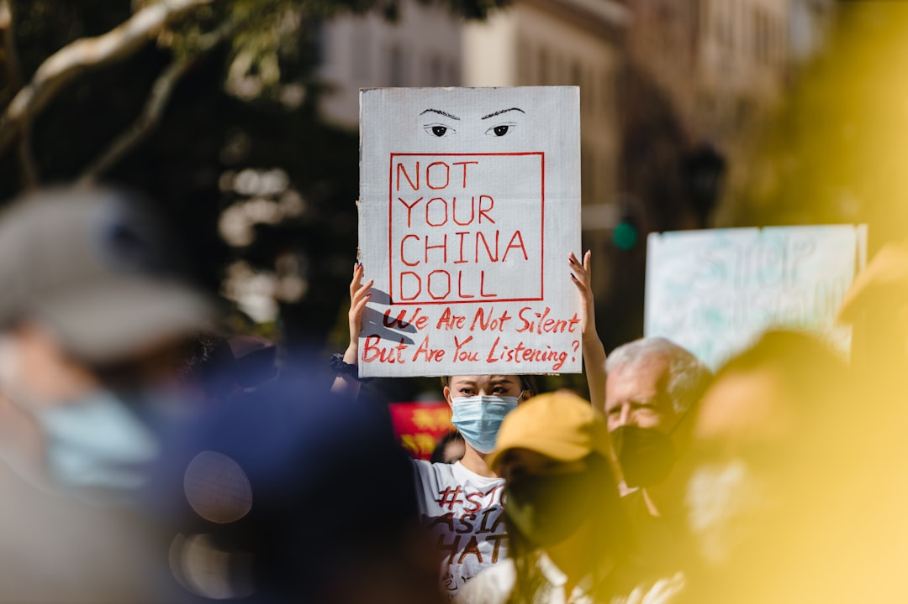

**The Crypto Mirage: An Illusion of Freedom and the Reality of Exploitation**
**The Crypto Mirage: An Illusion of Freedom and the Reality of Exploitation** In a world increasingly defined by technological advancement, cryptocurrencies have been hyped as the revolutionary freedom fighters of finance. But let’s peel back the layers of this glittering facade and uncover the dehumanizing practices and socio-economic injustices lurking beneath the shiny veneer of Bitcoin, Ethereum, and their brethren. This isn't just a critique of a financial system; it's a necessary awakening to the exploitation masquerading as liberation. **An Illusion of Democratization** At first glance, the sell for cryptocurrencies is intoxicating. Advocates preach the gospel of decentralization, where the power that typically resides with banks and governments is purportedly returned to "the people." They argue these digital currencies act as a great equalizer, allowing anyone with an internet connection to participate in the economy, free from the tyrannies of traditional finance. Isn’t that poetic? But this narrative conveniently ignores the harsh reality that the crypto sphere is not as egalitarian as it claims to be. In fact, studies repeatedly show that a disturbingly small percentage of individuals hold the majority of cryptocurrencies, thus perpetuating wealth inequality that mirrors (and in some aspects, exacerbates) the existing capitalist structures. Over 80% of Bitcoin is owned by merely 0.1% of its holders. This isn’t democratization; it's the recreation of an elite hierarchy, with some crypto whales swimming in riches while the majority drown in volatility. **Environmental Catastrophe Disguised as Innovation** Let’s not overlook the environmental catastrophe that accompanies cryptocurrency mining. Bitcoin alone consumes more energy annually than entire countries, contributing to a significant carbon footprint and exacerbating the climate crisis. The mantra of ‘green technology’ rings hollow when the reality reveals that this “innovation” is driving us toward ecological ruin. The intensive energy requirements of mining operations are often powered by fossil fuels, which hang like chains around our planet’s neck. Those who champion cryptocurrencies as the future aren’t just blind to this reality—they are complicit in a system that prioritizes profit over planetary survival. Are we really willing to sacrifice our very home on the altar of digital currency profit margins? **The Playground for Scammers and Speculators** Perhaps the most insidious element of the crypto landscape is its role as a playground for fraudsters and speculators, driven by rampant deregulation. In a system where transparency is marketed as a virtue, the reality is that wealth is often built on the backs of the vulnerable. Countless scams—including Ponzi schemes, “rug pulls,” and fake ICOs (Initial Coin Offerings)—have bilked unsuspecting individuals out of their savings. The lack of regulatory oversight in cryptocurrencies creates a haven for those peddling snake oil in the form of digital coins. Middle-class families selling their possessions to buy the next ‘big thing’—the next coin that’s supposed to change their fortunes—become victims of a brutal system that preys on their desperation. This underground market isn’t a haven for the average Joe; it’s a breeding ground for exploitation. **Wall Street Gets a Re-Branding** Let’s not forget that traditional finance, laden with its problems, haven’t disappeared; they’ve merely rebranded as “crypto.” The same greed-driven motives are at play. Just take a look at institutional investors flooding into crypto markets, profiting off the chaos. Firms that once laughed off Bitcoin as a “bubble” have now joined the gold rush, adding legitimacy to a system rife with instability. This isn’t rebellion; it’s the same old exploitative game under a new guise. Perhaps most unsettling is the growing trend of major corporations endorsing cryptocurrencies, incentivizing speculation on a grand scale. PayPal, Tesla, and a myriad of others have entered the arena, breathing life into a cycle that fuels both consumerism and volatility. This isn’t liberation for the masses; it’s a new wave of corporate capitalism, where everyday users are further entangled in an uncertain economic web, shackled to the whims of the market. **The Calls for a Fairer System** It becomes abundantly clear that while cryptocurrencies may promise innovation, the reality is a regressive system that prioritizes profit over the welfare of humanity. What we need isn’t another speculative bubble or a decentralized finance scheme; we need a
Updated 2025-08-03 07:55 UTC